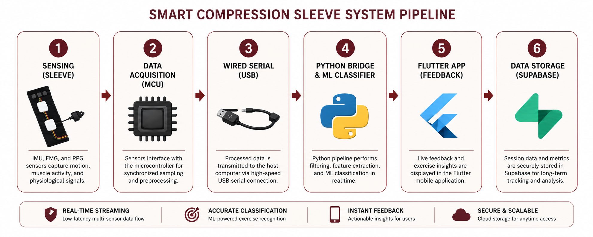

Embedded Firmware
Arduino firmware for synchronized IMU, EMG, and PPG acquisition.
github.com/ejzandy/sleeveFrom wearable sensing to real-time feedback — a complete end-to-end rehabilitation system.
Public repositories powering firmware, machine learning, mobile development, and cloud infrastructure.
Arduino firmware for synchronized IMU, EMG, and PPG acquisition.
github.com/ejzandy/sleeveReal-time filtering, feature extraction, ML inference, and WebSocket streaming.
github.com/ejzandy/bridgeRehabilitation dashboard for live visualization and rep tracking.
github.com/ejzandy/appSupabase cloud storage, authentication, and APIs.
github.com/ejzandy/backendEnd-to-end rehabilitation data flow.

Multi-layer software architecture enabling real-time rehabilitation monitoring.
Embedded firmware streams synchronized IMU, EMG, and PPG signals.
Filtering, feature extraction, Random Forest inference, and metric generation.
Low-latency communication between Python and Flutter.
Live rehabilitation visualization, analytics, and feedback.
System parameters optimized for real-time rehabilitation monitoring.
| Parameter | Selected Value | Purpose |
|---|---|---|
| EMG Sampling | 1000 Hz | Captures rapid muscle activation. |
| IMU Sampling | ~60 Hz | Supports motion tracking. |
| PPG Update | ~1 Hz | Tracks heart-rate variation. |
| Serial Baud | 230400 | Stable multi-sensor streaming. |
| Classifier | Random Forest | Exercise form classification. |
| Signal | Filtering | Purpose |
|---|---|---|
| EMG | 20–250 Hz bandpass | Noise reduction and envelope extraction. |
| IMU | Complementary + 4 Hz LPF | Stable elbow angle estimation. |
| PPG | EMA smoothing | Heart-rate stabilization. |
| Signal | Latency | Engineering Meaning |
|---|---|---|
| IMU | 2–50 ms | Responsive motion tracking. |
| EMG | 17–65 ms | Near real-time muscle monitoring. |
| PPG | 0.5–1 s | Expected optical HR delay. |